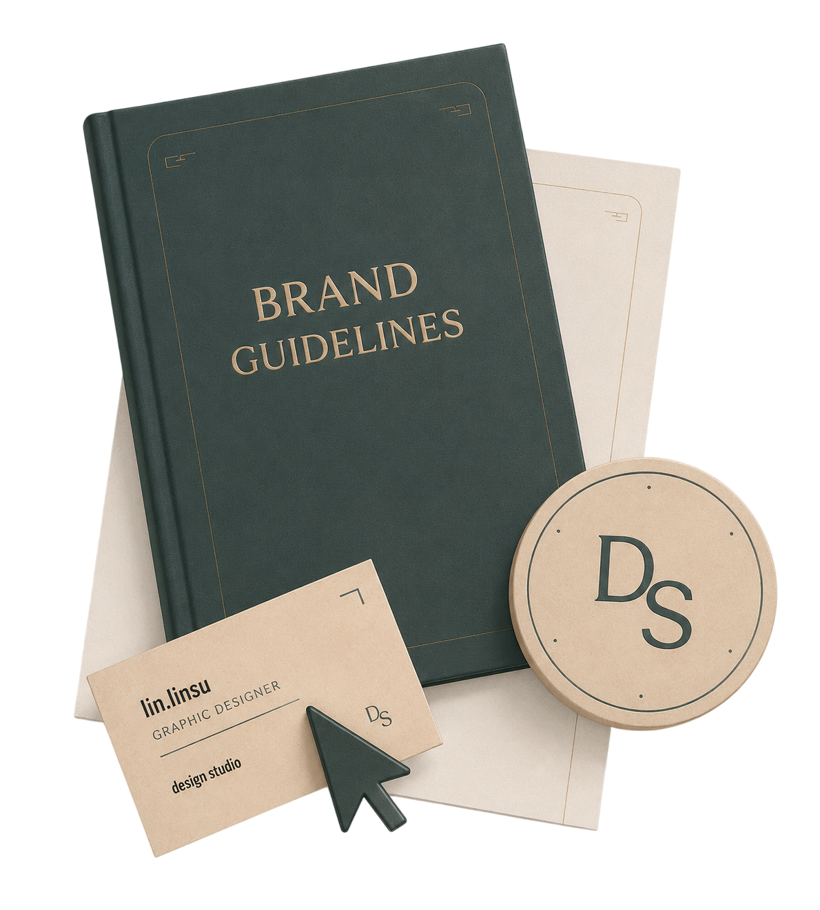
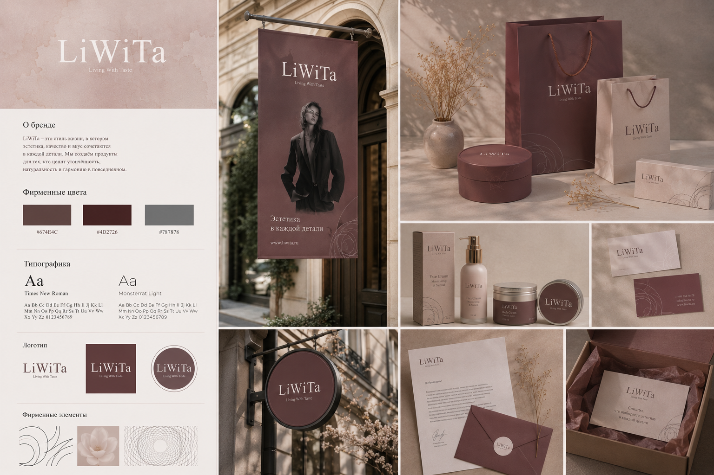
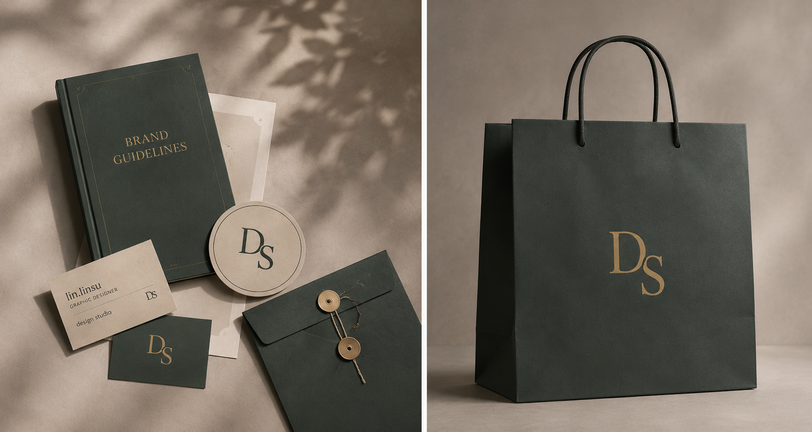
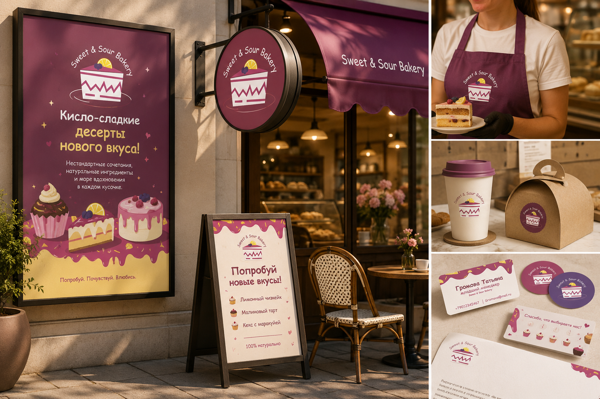
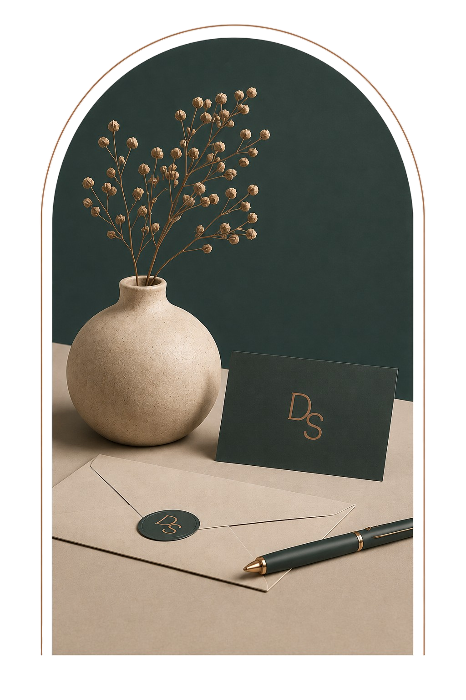

Логотип
Разработка уникального знака, который отражает суть вашего бренда.
Создаю уникальный фирменный стиль, который делает ваш бренд узнаваемым и запоминающимся. Каждый элемент — от логотипа до фирменных носителей — работает на создание целостного и профессионального образа.
Обсудить проект ↗
Разработка уникального знака, который отражает суть вашего бренда.
Подбор гармоничных цветов, которые вызывают нужные ассоциации.
Выбор шрифтовых пар, подчёркивающих характер бренда.
Фирменные паттерны, иконки и элементы для коммуникаций.
Дизайн визиток, бланков, конвертов и других материалов.
Погружаюсь в бизнес
и собираю информацию
Анализирую рынок,
конкурентов и аудиторию
Создаю направления
фирменного стиля
Дорабатываю систему
и готовлю материалы
Передаю файлы
и гайдлайн



Свяжитесь со мной, и мы разработаем фирменный стиль, который подчеркнёт уникальность вашего бизнеса.
Написать мне ↗